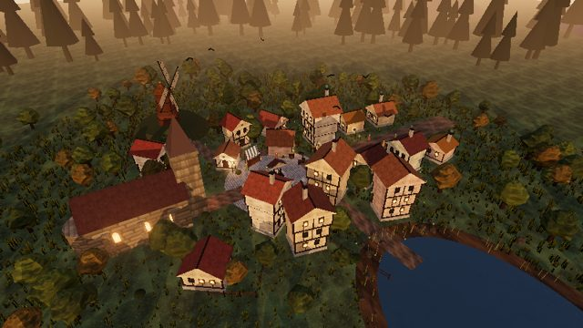
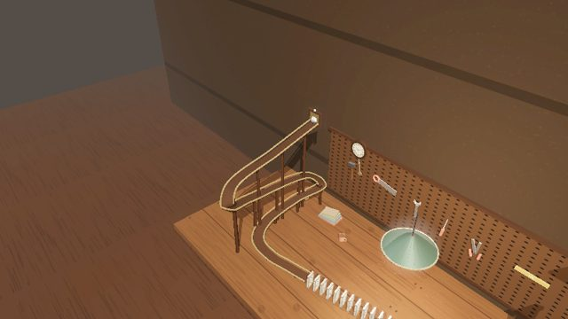
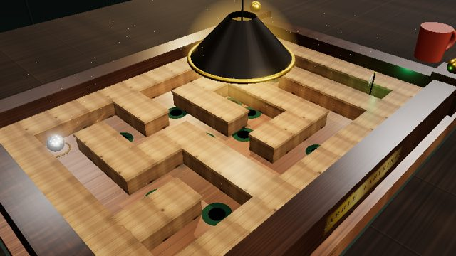
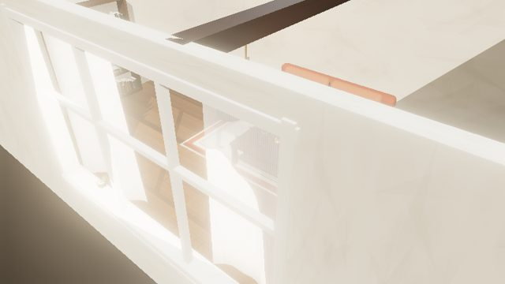
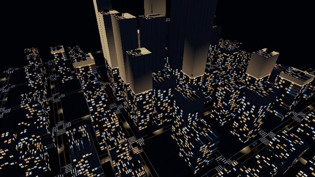

Five interactive 3D scenes, each written in one attempt by Inkling-2-Small from a single text prompt. Every file is the unedited model output: one self-contained HTML page with no downloaded assets.
Each is the top-ranked of five samples for its prompt, picked by LLM-as-a-Verifier after a runtime check. Drag to orbit; the scenes are heavy and run best on a machine with a good GPU.

A medieval village in warm low evening sun, with an automatic camera tour until you drag.
Open scene →
A chain-reaction contraption on a workshop bench, simulated without a physics library.
Open scene →
A playable tilting wooden maze: use the arrow keys to roll the marble past the holes.
Open scene →
An interior lit by sunlight through the windows, focused on light and shadow.
Open scene →
A night-time city grid with 160 simulated cars moving through signalled intersections.
Open scene →